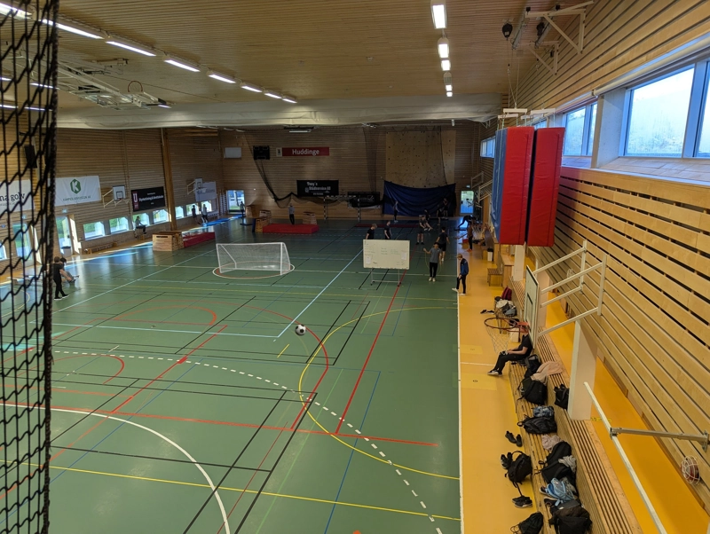

Sport

Skol semifinal pågår i 9 timmar: fortfarande 0-0
Det börjar som ett mycket rörligt spel med flera tidiga målchanser, många höga bollar från TEIN25 och flera drivningar mot SASA25:s mål. Men sen så lyckas en av skotten från Infomedia träffa helt rätt och plötsligt ligger det 1-0 till Infomedia följt av publikens jubel efter bara 3 minuter av spelet. Sam spelar aggressivt och försöker få tillbaka momentum och pressar bollen över plan, men den åker ut. Återigen så lyckas Sam få tillbaka bollen och två av deras spelare springer ifrån sitt lag, driver på bollen mot målet men de blir svärmade mitt på TEIN:s planhalva. Det går kaotiskt till i den följande drabbningen och det är oklart om det brutits mot reglerna när det dömdes att teknikarnas poäng ska bli tillbakadraget – tillbaka till 0-0.
Andra halvlek börjar starkt med en oväntad tackling mitt på plan där en sammare krockar med en infomedia medan de springer åt helt olika håll under en offensiv. Matchen pågår i samma mån ett tag till tills en från Teknik ramlar mot golvet och glider 30 meter innan de träffar teknikarnas enda inhoppare. Spelet tar en paus och är inte tillbaka förrän mer än två timmar efter, då ingen annan kunde ta inhopparens roll. Andra målet från Infomedia är bortdömd på grund av en foul i uppbyggnaden till målet, så matchen är fortsatt 0-0. Tiden tickar ner och ännu en till Infomedia ramlar på planen under den fortsatt stora växlingen av bollen. Ett tag senare är det frispark och målvakten från Sam kliver upp. Inlägg har perfekt vikt… ( Vi stoppar denna sändning för några meddelanden från våra sponsorer: Gustavs glidmedel "När ingen på planen ska stå, vandra då ner till Gustavs vrå." Vi finns på Östermalmsgatan 7 ¾ ) …som MISSAS av bägge spelarna. Efter det sätter sig alla spelare på planen ner och spelar charader i några timmar. Då, när Sam minst förväntar sig det och det är smärtsamt uppenbart att en av spelarna imiterar en elefant, slår Teknik till. De kastar ut bollen till planen, siktar och skjuter. Äntligen, efter nio timmar, kröns TEIN25 vinnare i fotbollsturneringen. Publiken applåderar stolt när historien återberättas hemma.